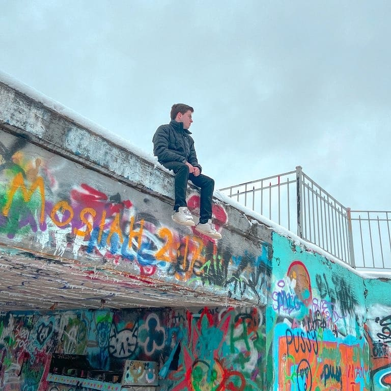
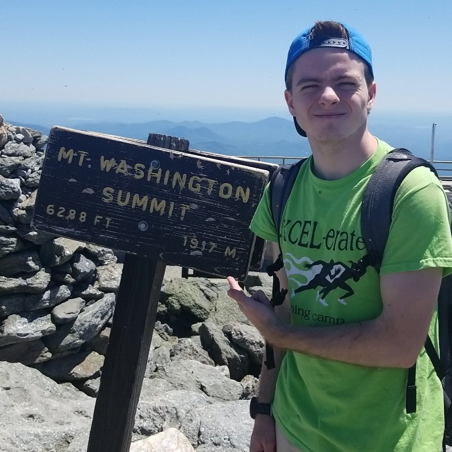
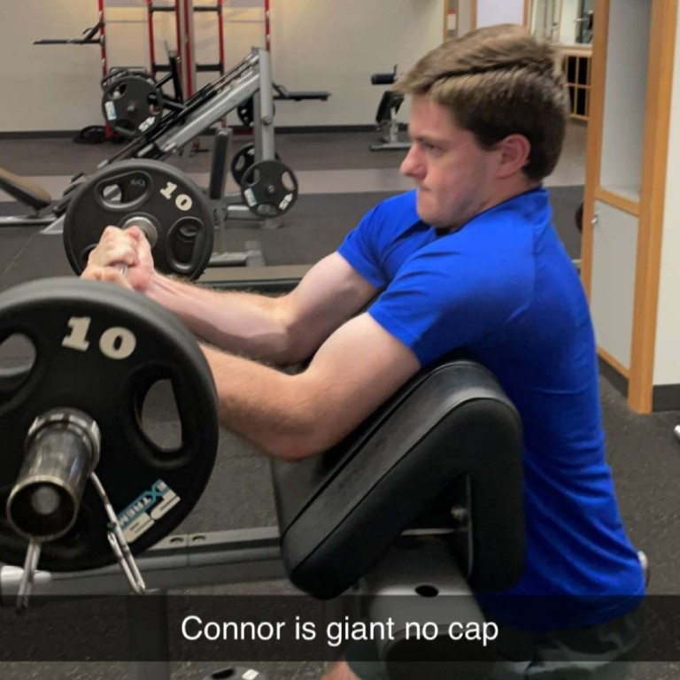

About Me
|  |
As stated on the home page, my name is Connor Montague, and I'm a sophomore at URI this fall. To go a little more in depth, I'm majoring in mechanical engineering with a (nearly complete) minor in mathematics. I'm also looking to minor in computer science, as it is a great tool to have that I've always been interested in. Besides my academic career, I also worked this past summer as a beach attendant at the Charlestown Town Beaches just 15 minutes south of campus. |
 |
|  |
In high school I ran for the cross country and track team all 4 years, but unfortunately when Covid cut my high school running career short I was very discouraged from continuing as the team aspect is what made it so enjoyable. Nowadays I hardly run as much as I used to, however I still enjoy regularly hiking with my friends. On the left is a picture of myself after I had hiked all the way up to the summit of Mt. Washington. Recently this past summer I also began lifting weights at the Fascitelli Gym here on campus at URI, and made significant progress. |
 |